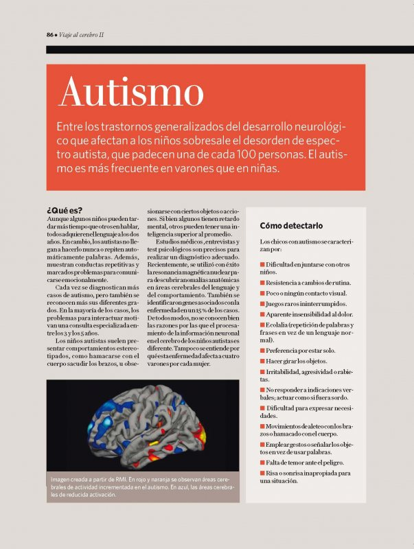

Enlace al Artículo
link para más informaciónFecha de publicación: sábado 15 de noviembre de 2014
Resúmen
El objetivo del artículo es analizar el marco conceptual en el que se sitúa la intervención logopédica en los trastornos de la adquisición del lenguaje. Se expone el ‘modelo de intervención en tres niveles’: la estimulación reforzada del lenguaje, la reestructuración del lenguaje y la sustitución del lenguaje. Se analizan los conceptos de ‘intervención ambiental’ desde el enfoque naturalista, el de ejercicios funcionales y el de ejercicios dirigidos o formales. Se estudian las variables que influyen en la especificidad de los tratamientos logopédicos. Como ejemplo de tratamiento específico se describe la intervención en percepción auditiva